AED jest
w środku
w środku
całą dobę
w godzinach
Każda minuta ma adres.
Zatrzymanie krążenia? Dzwoń 112 · gdzieaed.pl

Opublikuj dane o swoim defibrylatorze na dane.gov.pl. Na otwarteaed.pl zajmie to kilka minut.
Opublikuj dane o swoim defibrylatorze na dane.gov.pl. Na otwarteaed.pl zajmie to kilka minut.